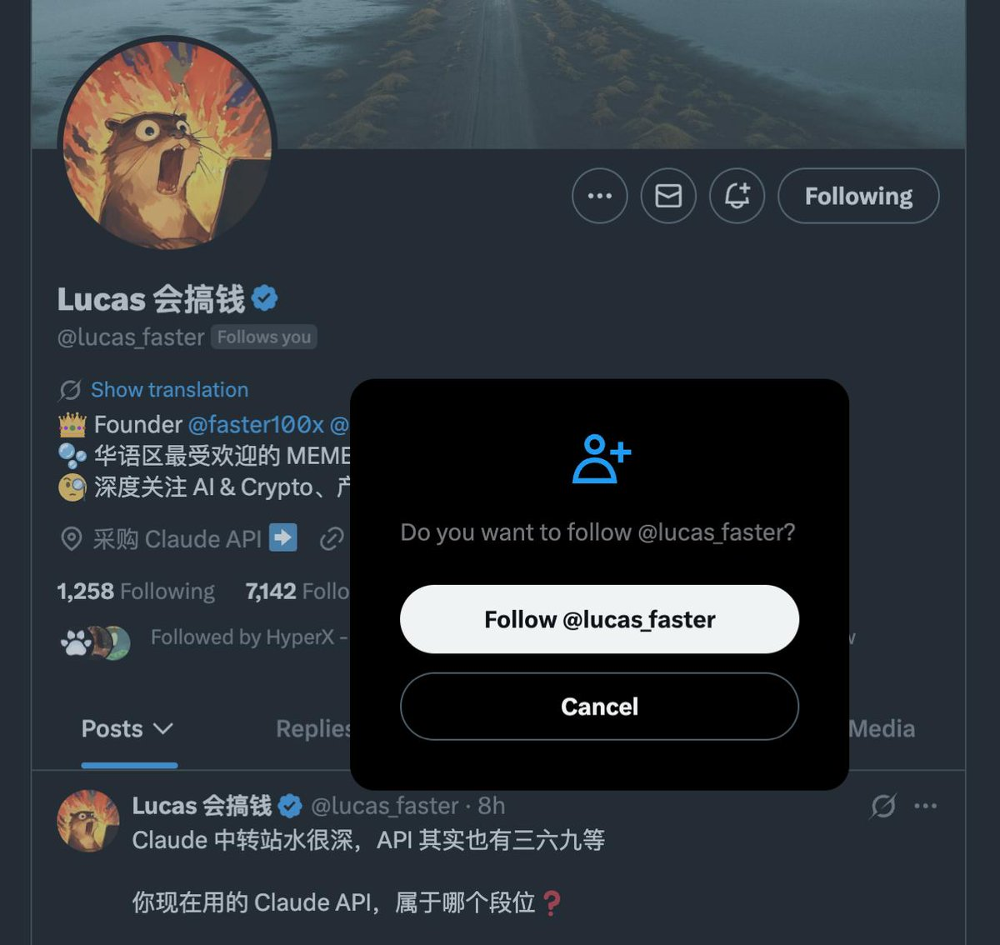

绿色杯子千尋醬喵～🏳️⚧️🇺🇸
@qianxunchan
@lucas_faster
https://t.co/uXNE70RXP6

Lucas 会搞钱
@lucas_faster
给大家分享一个 Twitter 涨粉小技巧
能把你的关注转化率提升 50% 到 200%
不管你是在网站、Bot、签名、文章里，还是在私信别人时，都可以直接用
分享个人推特的时候，不要分享默认个人资料页面对应的 URL
尽量分享 https://t.co/lbVKbmVhNj 这个链接，直接把「关注」动作塞到用户眼前 https://t.co/910Cue48AC